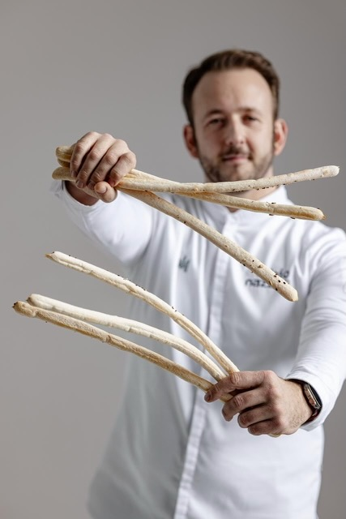

Fabio Nazzari
Link in bio
A cleaner social-first landing page with the most useful links from the Fabio Nazzari world.
Quick links
Open the right destination instantly
This page is designed as the single link to use on social media and routes visitors to the most relevant Fabio Nazzari destinations.